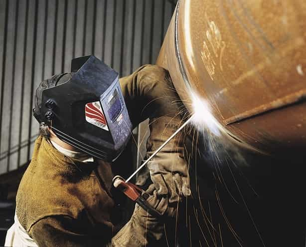
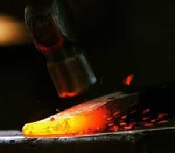
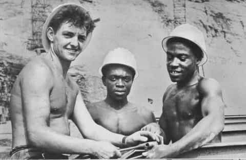
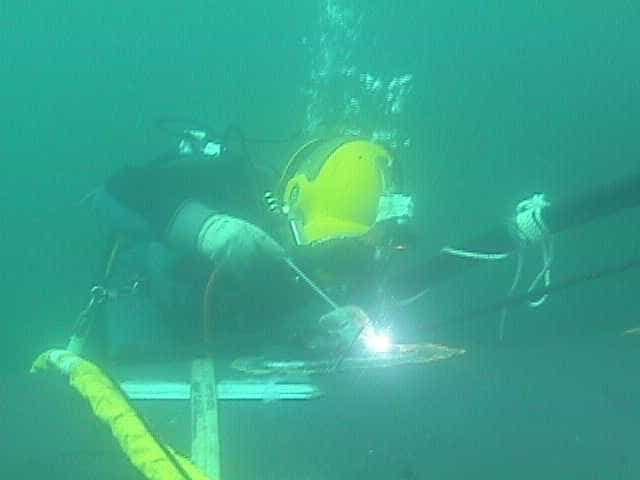

< < < Back
Is A Blue Collar Job for You? – Return Of Kings
Several ROK writers have offered the trades as an alternative to the debt slavery of a college degree. Instead of sending out sixty resumes a week you can walk into a field with two million unfilled jobs. Being willing to work hard, get dirty, able to follow instructions, like money, and be good at what you do are the only requirements for tradesman.
So all this sounds great and it might be the perfect option for you, but what is it really like making the switch? Has anyone really done it? Well gentlemen, I’m currently in the process and since I’ve gotten so much good advice over the years from Roosh and ROK I feel it’s time to give back.
For the last 10 years I have been the typical contracting office drone with all the trimmings. Car payment, mortgage, the annual short vacation. I am currently making the transition from web designer to pipe welding. It’s been one hell of an adjustment, let me tell you.
Weather

If you choose to make the change there are some major factors to consider. First is your tolerance for all weather. If you choose pipefitting or pipeline work, be prepared to freeze or fry. On the coldest day on record in my city I was in an open concrete commercial bay for four and a half hours straight.
The welding leathers and hot steel kept my top half warm but my feet were completely frozen. Next week will be in the 80’s here, so now imagine a rawhide leather jacket plus hot steel plus 85 degrees. Yeah. Part of the money you make is compensation for your discomfort. Or hardiness. Whichever you prefer to call it.
No quiet, air conditioned offices and comfortable chairs in the outside fields, although there are a variety of shop jobs if you can’t stand the weather. The big money is in the field though.
Accidents

Next on the cons list is the constant threat of getting hurt. Accidents do happen, so if you choose this line of work you should know the risks and go into it with your eyes open. You are dealing with sharp objects, heavy machinery, poisonous chemicals, and high temperatures.
A few weeks ago I had my foot in the wrong place and a drop of molten metal burned through my pant leg and rolled into my boot. I couldn’t get it off fast enough. The guys are still laughing about it. Even on your most careful day sparks will find a way to get to you. I’ll tell you as I was told, “You WILL get burned.”
Also be mindful of your co-workers and what is going on around. Don’t let all this scare you, though. With proper training, safety gear, and awareness of your area you should be fine.
The Classroom
I bet you’ve heard lots of jokes about dumb welders. I’m sure that stereotype got started for a reason and some guys just learned to weld on the job or in prison, but a becoming a fully trained welder will require you to hit the books.
Welding basic things is simple, but depending on what your specialty is, the learning curve will soar. You’ll spend lots of time learning fractions, measurement, conversions, and calculations you’ll need to make things properly. There are special symbols you’ll need to know so you can work from blueprints. Different welding rods have different properties such as how deeply they penetrate, how much weight they’ll hold, and which types of metal they’ll weld.
Certain types of welding require the use of special shielding gases and you need to know their properties. If you don’t like to read you’ll have a hard time getting licensed. There may be some dumb welders out there, but welding is not for the dumb.
Experience One Of The Last Great Strongholds Of Masculinity

I’m a people person and the trades have no shortage of interesting people. The variety of personalities I’ve met is amazing. Ex-cons, guys looking to get ahead, artists, and kids just out of school looking for a first opportunity. The instructors all had stories enough to fill several lifetimes.
Every person I’ve met so far is far and away more interesting, sincere, and real than the average over-caffeinated office drone in the cube next to you. Teamwork means something different when you are connected by a very heavy object you couldn’t move by yourself. Even when there is competition between you, you are all on the same team. We are all responsible for each others’ safety.
The Money You Make Is Largely Up To You

As I began looking at jobs, I noticed that the salaries were not the spectacular amounts I had heard about. After talking to my teacher I learned that all the big money is made running your own shop. You’ll be your own boss, but there’s everything that goes with it. Buying the tools and equipment. Learning what to charge. Getting good people. Dealing with whatever your area’s laws and regulations for welding shops are.
But hey, if you were afraid of a little hard work you wouldn’t be reading this article would you? Also welders are needed all over the world so if you do decide to get a job then why not get one in the Poosy Paradise of your choice?
I’ll end this by asking all you tradesmen out there to comment a bit on your experiences and stuff you wish you had known when you started. See you on the jobsite.
Read More: How A Sitcom Shoved The Blue Pill Down Our Throat


{kind=link}
{kind=link}
{kind=link}
{kind=link}
{kind=link}